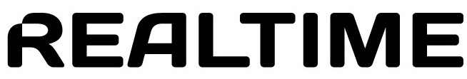

Starting with Chrome 42 you are able to send push notifications to your website users, even when they are not browsing your website.
We have integrated this new feature into the Realtime Cloud Messaging Pub/Sub service to make your life easier.
You probably noticed that Chrome asked if you allowed notifications from this website. If you accepted you are already subscribed to your own private channel to receive notifications.
Your channel is: ...
This was performed through the new subscribeWithNotifications method in the Realtime JavaScript SDK.
Demo time! Clicking on the following button will send a new push notification to your private channel (only you'll see the push).
You should see a Chrome Push Notification pop-up like this near your system tray (the first push may take a little more time to be delivered due to the underlying Google Cloud Messaging backend configuration).
This example uses a private channel for each user so you can send pushes at will, without annoying other users. A typical use case in a website would be using a global channel and subscribing each user to that channel. This way you could broadcast a single push to all users simultaneously. It´s powerful but should be used wisely.
No problem, if an instance of Chrome is running users will see your notification pop-up inviting them back to your website. If Chrome is not running the pop-up will be shown as soon as Chrome is launched.
Let's try it. Copy the following curl command and navigate away from this website. Paste the command in your terminal window and send yourself a push notification. When you receive it click on the pop-up to comeback to this page.
The command above is simply sending a Realtime message to your private channel (the C parameter) using the Realtime REST API. The Realtime server will take care of broadcasting it to Google Cloud Messaging.
Yes it will, with no code changes.
If you have an Android device with Chrome 42+ installed just navigate to this page and copy your private channel. Then replace the channel name in the curl above (the C parameter) and give it a go.
But the good news won't stop here. Taking advantage of the Realtime Cloud Messaging integration with GCM for Android devices and APNS for iOS/OSX devices, now you'll be able to send one single push to your entire user base in almost all platforms. Until now you could only do it with native mobile apps, now you can do it also for your website users.
We are currently working hard to add support for Safari OSX website push notifications also.
You'll find this example source code and starting guide at https://github.com/realtime-framework/ChromePushNotifications
Follow the guidelines and in less than one hour you'll be engaging with your website users. Go for it ...